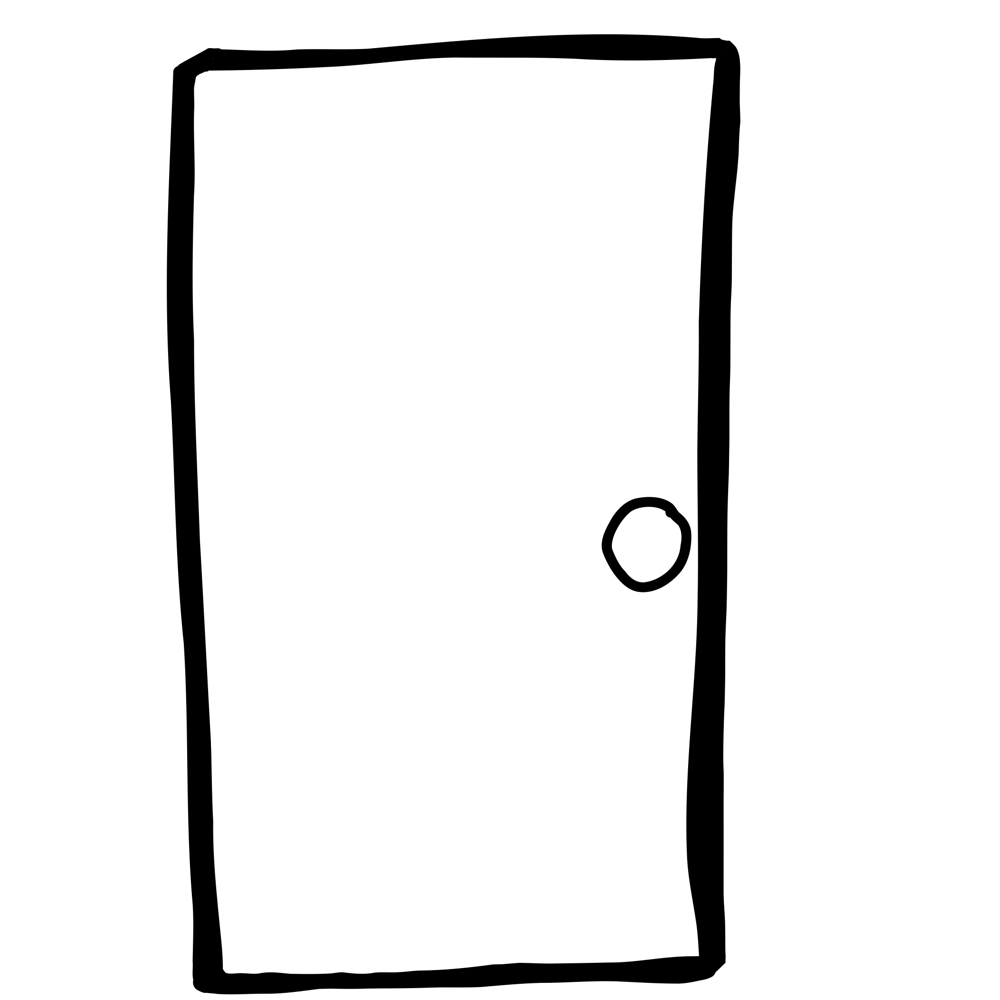
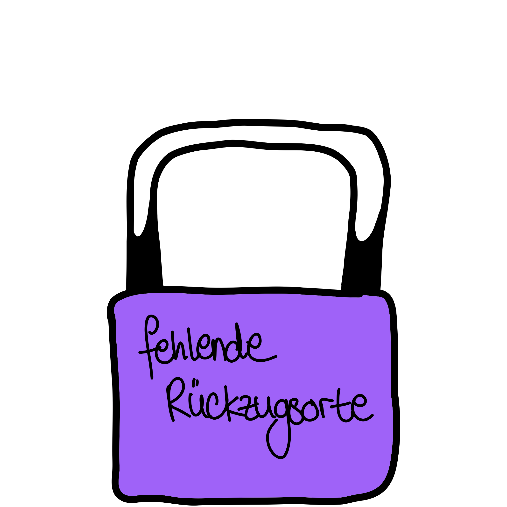
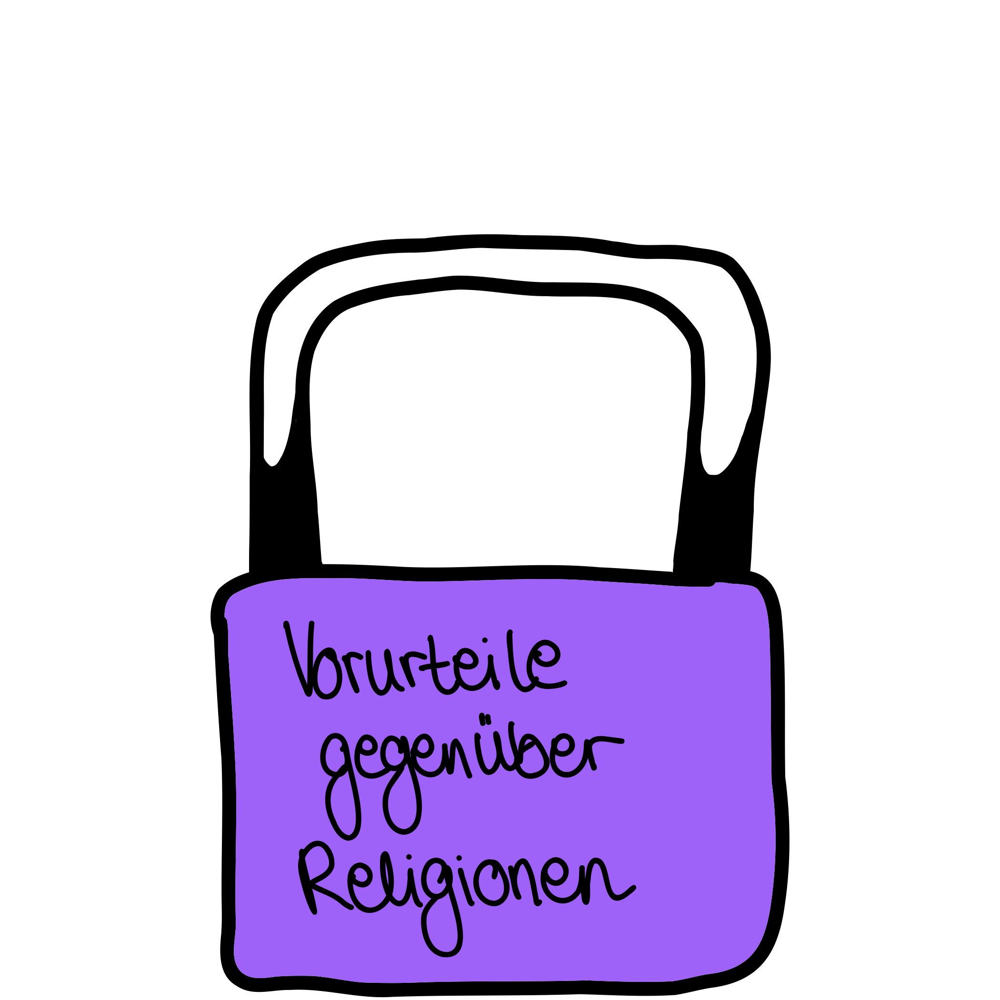
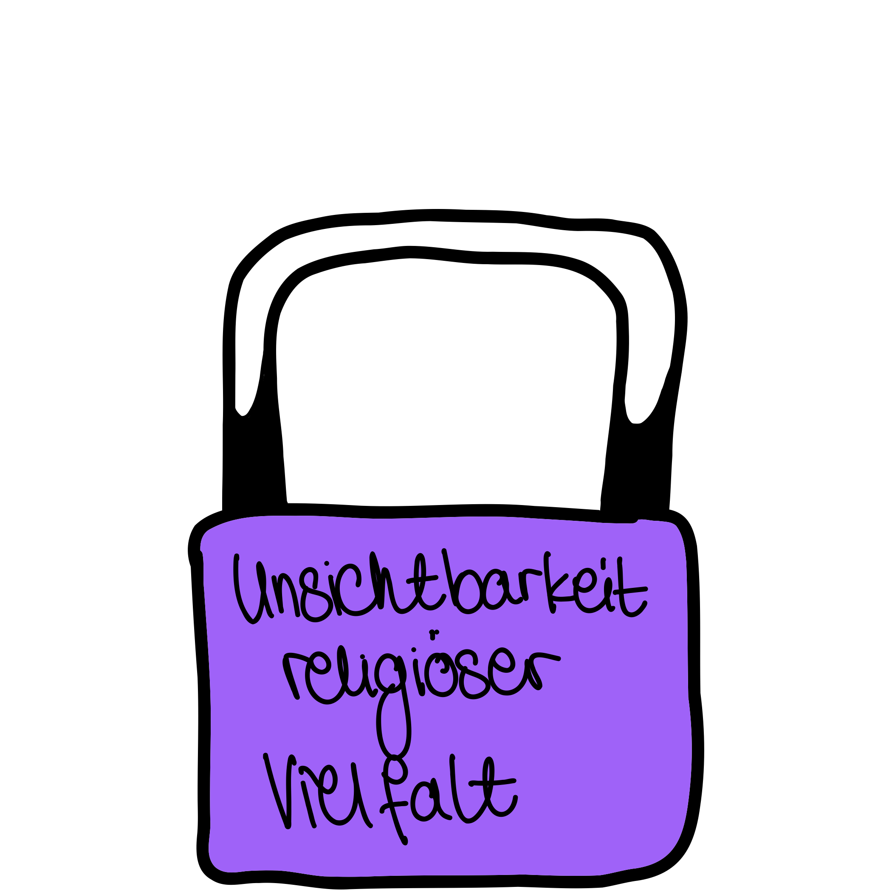

Flexible Pausenregelungen und Bereitstellung von Ruheräumen für Gebete oder Meditation führen zu mehr Zugehörigkeit, psychischem Wohlbefinden und einer wertschätzenden Unternehmenskultur.

Die Durchführung von Workshops, um Wissen und Verständnis für unterschiedliche Religionen und Weltanschauungen zu stärken, fördern religiöse Toleranz und helfen, Diskriminierung und Stereotype im Arbeitskontext abzubauen.

Förderung eines offenen Umgangs mit religiösen Symbolen und Feiertagen im Unternehmen stärkt die gegenseitige Akzeptanz und vermittelt Wertschätzung kultureller Identität.